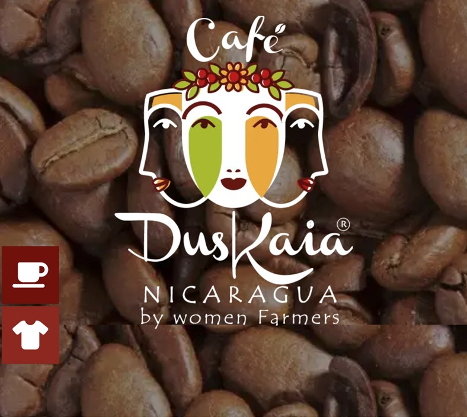

Our Story
Duskaia Coffee is a Nicaraguan organic gourmet brand founded by Meyling Moreno, a farmer from the mountains of northern Nicaragua. Grown by a family cooperative of 45 local producers, including her eight sisters, the shade-grown Arabica beans are meticulously processed from seed to cup.
Meyling was raised on her family's coffee farm in the mountainous regions of Nicaragua, learning the entire agricultural process—from planting seeds to harvesting—alongside a sisterhood of female farmers. Driven by a desire to share her country’s vibrant culture and heritage, she moved to the United States with a goal of opening her own cafe.